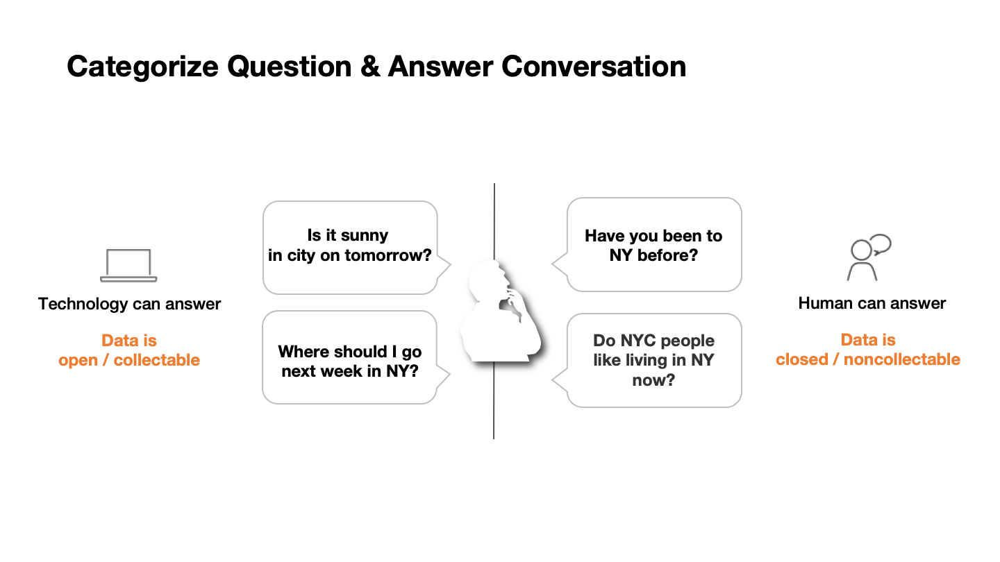
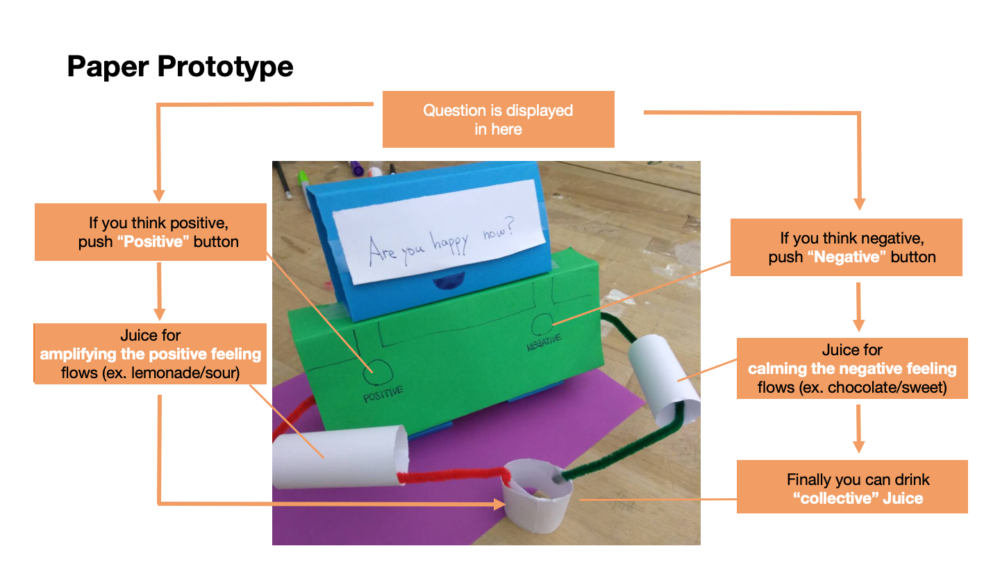
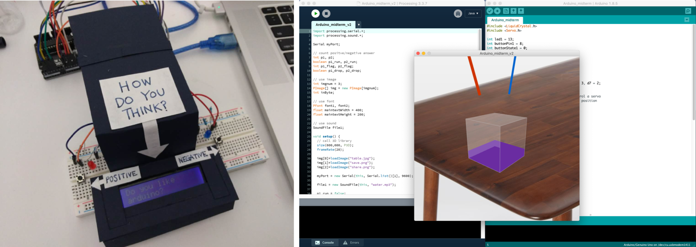
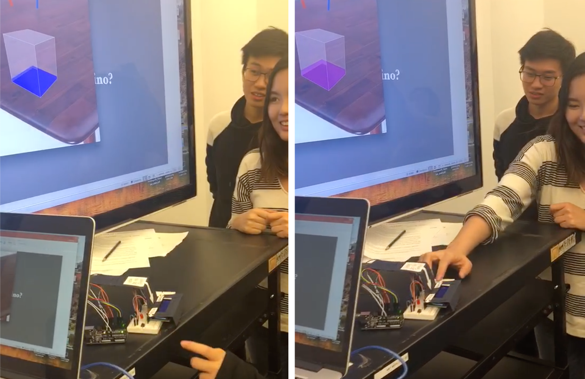
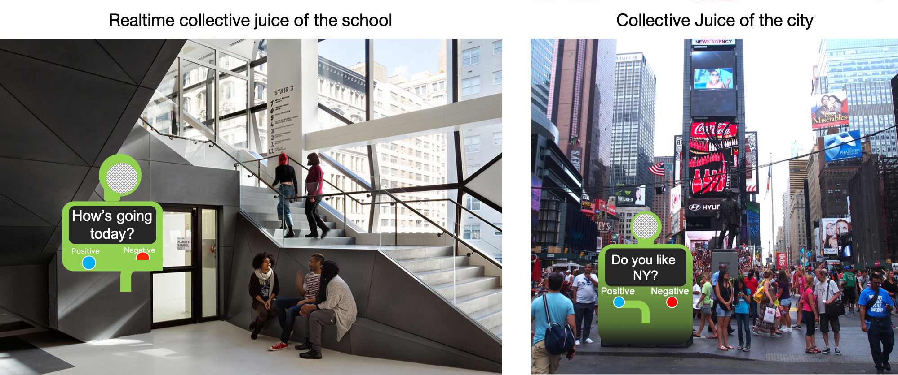

Collective Juice is a physical product that collects different user’s emotions and tone together to reveal and visualizes the “mood” of the group/community.
Objective
How might we collect responses to questions that can only be answered by humans?
As the development of technology, we can find many answers online within just a second. Have we ever wondered how the other people think about the same question? Have we ever wondered what it looks like after collecting different opinions together?

Concept
Convert people’s emotions into collective mood of the group/community

Design Decision
What kind of question is appropriate?
Use an open question to confirm the difference between a collective opinion and a subjective opinion and to ask a more social question.
How to answer the question?
Decide to use easy yes/no question to create a first running mockup quickly. Types of quesitions and responding formats can be changed later.
How to visualize answers?
More intuitive way is appropriate such as color or size. Decided to explore a tangible format because data visualization on the screen is being implemented in many cases.
Sought a different perspective by outputting data that is usually visualized visually to different sensory such as taste.
Is there a business impact?
Realize the experience of tasting a mood of the day and expect commercialization as a drink of the “mood”.
Physical Prototype
Using arduino and processing, I implemented the physical prototype.

Evaluation

Future Iteration
I am planning to improve it using actual juice and demonstration in public spaces and facilities.
Platform to collect public opinion
It can be used as a platform to visualize the current mood of cities, facilities and communities. We can compare how much mood of real-time people is different according to region and location.
Collect more diverse emotion
Human emotion is more than just positive or negative. It can added more diversity emotions such as sad, exhausted and happy.
